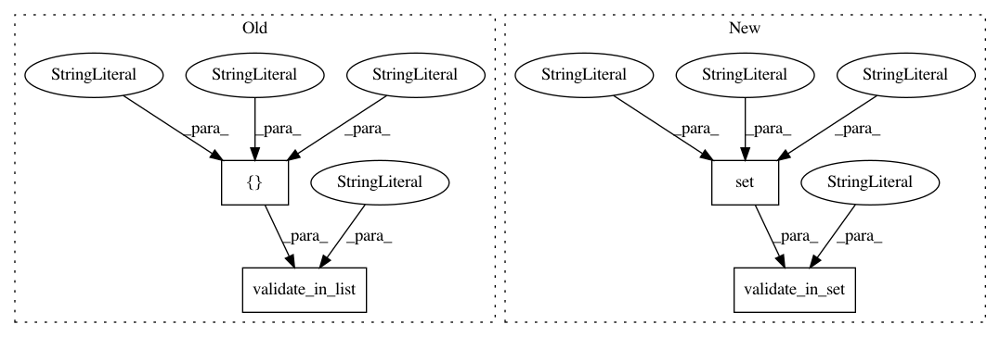

6f5c36ba99e6e32bdcd4d7f2882f3d9f58fdbb83,qiskit/aqua/algorithms/single_sample/grover/grover.py,Grover,__init__,#Grover#Any#Any#Any#Any#Any#,53
Before Change
AquaError: evaluate_classically() missing from the input oracle
validate_min("num_iterations", num_iterations, 1)
validate_in_list("mct_mode", mct_mode,
["basic", "basic-dirty-ancilla",
"advanced", "noancilla"])
super().__init__()
if not callable(getattr(oracle, "evaluate_classically", None)):
raise AquaError(
After Change
AquaError: evaluate_classically() missing from the input oracle
validate_min("num_iterations", num_iterations, 1)
validate_in_set("mct_mode", mct_mode,
{"basic", "basic-dirty-ancilla",
"advanced", "noancilla"})
super().__init__()
if not callable(getattr(oracle, "evaluate_classically", None)):
raise AquaError(
In pattern: SUPERPATTERN
Frequency: 3
Non-data size: 4
Instances
Project Name: Qiskit/qiskit-aqua
Commit Name: 6f5c36ba99e6e32bdcd4d7f2882f3d9f58fdbb83
Time: 2020-01-03
Author: manoel@us.ibm.com
File Name: qiskit/aqua/algorithms/single_sample/grover/grover.py
Class Name: Grover
Method Name: __init__
Project Name: Qiskit/qiskit-aqua
Commit Name: 6f5c36ba99e6e32bdcd4d7f2882f3d9f58fdbb83
Time: 2020-01-03
Author: manoel@us.ibm.com
File Name: qiskit/chemistry/algorithms/q_equation_of_motion/q_eom_vqe.py
Class Name: QEomVQE
Method Name: __init__
Project Name: Qiskit/qiskit-aqua
Commit Name: 6f5c36ba99e6e32bdcd4d7f2882f3d9f58fdbb83
Time: 2020-01-03
Author: manoel@us.ibm.com
File Name: qiskit/chemistry/algorithms/q_equation_of_motion/q_eom_ee.py
Class Name: QEomEE
Method Name: __init__